In MoneyWorks Express, Gold and Datacentre you can store a single image with a transaction, and view it later. A typical example would be to scan in a purchase order from a customer and link it with your sales order. If there is a query about the order later, you can easily retrieve the copy.
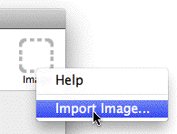
Viewing or attaching a source image is done through the Source Image icon at the top right of the transaction entry screen.
Click on the Source Image icon and choose Import Image
The standard File Open dialog will open
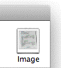
The icon will change to indicate that there is an image associated with the transaction.Alternatively you can simply drag the image file onto the Source Image icon.
MoneyWorks will copy the image into the custom plug-ins10 for you, and for network users upload it to the MoneyWorks server. This may take a few seconds. The source image icon will change to indicate that there is an image associated with this transaction.
The image will be displayed in the MoneyWorks report Preview window, or, if you are on Windows and it is a PDF, in Adobe Reader if installed.
field.
The Auto-Allocation rules are searched for a rule starting
Click the Auto- allocate icon to apply a named allocation.
The copy of the image will be permanently deleted.
MoneyWorks has various features to help make transaction entry faster, easier and more accurate.
Auto-Allocations allow MoneyWorks to assign default general ledger codes when you enter transactions. The allocations can be associated with customers and suppliers —see Default Account, or can be activated during transaction entry by a text in the To/From or Description fields. They can also be used when importing bank statements.
Example: Whenever you get charged interest by your bank, the word “Interest” is entered into the transaction description, enabling it to be automatically coded your Interest Expense. This is accomplished by creating an Auto- Allocation associated with the text “Interest”.
Auto-Allocations are applied to transactions as they are being entered, and are based on a set of pre-defined “rules” —see Setting up an Auto-Allocation for General Transactions, each rule being identified by a unique text string. To successfully apply a rule, you need to have entered the matching text into either the To/From or the Description field, and the transaction amount in the Amount
with the text in the To/From field. If no match is found, the rules are searched for a rule starting with the text in the Description field. Detail lines are automatically created for the accounts and breakdown specified in the rule.
A beep is sounded if no matching rule is found.
Alter either the text in the To/From field or Description (if the rule was incorrect), or the Amount and press Ctrl-U/⌘-U
The new rule will be applied to the value in the Amount field.
Sometimes you may want to allocate certain percentages of the total value of a transaction to various accounts. MoneyWorks makes this easy. If you type a percentage (that is, a number followed by a percent (%) sign) into the Net or Gross field of a detail line for a non-item transaction, MoneyWorks will calculate that percentage of the transaction Amount and enter it into the detail gross when you tab out of the field. The Net and Tax fields will be recalculated accordingly.
For example:
Enter a Cash Payment with an Amount of $150
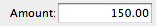
Type the account code in the detail line, then tab into the Net field. Type “50%”
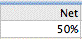
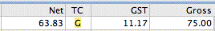
Press TabAs well as being able to enter numbers into transactions, you can also enter calculations. This is particularly useful if you need to work out the value that you want to enter.
To enter a calculation into a field:
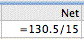
Type in the calculationMoneyWorks calculates that 50% of the transaction gross is $75.00. It enters this value into the detail gross field, then works out the Tax based on the account’s tax code, (in this example giving 12.5%) and net.
The first character in a calculation must be the equals sign (=).
Start your entry with an '=' to automatically calculate the subsequent expression.
Press Return to create the next detail line and carry on allocating the balance of the payment. You can use percentages again in subsequent lines if you want.
When you enter a date field, a standard date picker drop down will appear (unless you have turned off the date picker in Edit>MoneyWorks Preferences>General). You can select the date from the picker or key it in. In the latter case, you can enter the full date or just:
a single number, which will be assumed to be that day of the current month (e.g. “4” will be assumed to be the 4th of the current month);
a day/month (or month/day if your date formats are set to American dates), which will be assumed to be that date in the current year (e.g. “4/4” will be assumed to be the 4th of April this year). However if you are close to the start of a new calendar year, then an entry such as “12/12” will be assumed to be the 12th of December last year;
a six digit number, which will expand to a proper date (e.g. “080810” will expand to 08/08/10);
Pressing Ctrl-rightarrow/⌘-rightarrow will nudge the day up, and Ctrl- leftarrow/⌘-leftarrow will nudge it down.
MoneyWorks will evaluate the calculation that you have entered, and replace it with the result.
If you enter a calculation that cannot be evaluated (either because you have specified it incorrectly or because there is no valid answer as for example if you divide by zero), MoneyWorks will highlight the calculation that you have entered and beep. You will need to correct or replace it. Only the result of the calculation is recorded, the calculation expression is discarded.
You can enter calculations into virtually any field in a MoneyWorks entry screen. For example the result of a calculation in a date field will be converted to a date, in a numeric field to a number, and in a text field to a character string.
Example calculations:
|
|
|---|---|
|
|
|
|
|
|
|
|
|---|
You can open the system calculator at any point in MoneyWorks, provided you do not have a modal window open. To open the calculator:
The default calculator on your computer will appear. You should be able to copy the results of any calculations you do on this and paste back into MoneyWorks.
You can enter long text (i.e. more text than will fit into the field as shown on the screen) into both the transaction description and the detail description. As you enter the text, the field will grow vertically to accommodate it.
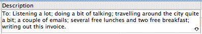
If you require more text than this, click the down arrow at the bottom right of the field or press Ctrl-↓/⌘-↓. The text entry window will open.
You can type the remainder of the text into this, and then click OK (or push keypad-enter). You can insert a carriage return character (for starting text on a new line) by pressing ↩︎/return. If you click Cancel, changes that you have made in the window will not be saved.
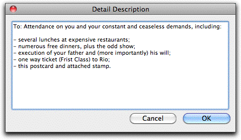
Changing Field AttributesYou can alter the way that many of the fields and pop-up menus in the header part of the transaction entry screen operate. You can exclude them from the tab order, so that they are not tabbed into as you tab round the window; you can have them remember the last value entered and carry it over into the next new record; and you can add Custom Validations to ensure correct data is entered.
To change the field attributes:
A contextual menu of field attributes appears
the margin of the current detail line is also displayed.
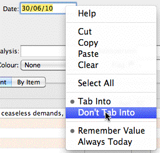
The Salesperson Fieldin transactions.
Tab Into: Pressing the tab key in the previous field will move you into this field;
Don’t Tab into: The field will be bypassed when you press tab.
Remember Value: The previous value that you typed into this field will automatically appear in new transactions;
Clear Each Time The field will be blanked between each new transaction.
Always Today: For the transaction Date, the field will default to today’s date.
Custom Validation: Add a custom validation to the field
No Validation: Remove a custom validation
For details on custom Validations and Validation Lists see Validations.
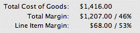
When entering a sales transaction involving products (such as a debtor invoice), it can sometimes be useful to see the margin information displayed on the screen at the point of entry. Thus if you are working out some sort of discount rate for example, all the information is visible.The margin information can be displayed in the bottom part of the transaction entry window by setting the Show Margins
The Salesperson field is a special field in the transaction window. It can be used in two different ways:
as another field for recording something about the transaction—maybe a code that indicates the salesperson in a sales transaction, or maybe something else.
in MoneyWorks Gold only, as a special field used for appending a department specifier to the item account codes. This only applies if you have departmentalised item control accounts for sales and purchases —see Setting Append Salesperson.
You can also change the name of the Salesperson field (e.g. to Branch or Area), so that it more closely resembles how you want to use it. This is done in the Document Preferences —see Fields.
No special action is required to use the Salesperson field as an ordinary field. However it is probably not a good idea to mix the usage of the field—if you are using it for controlling item departments in MoneyWorks Gold, then only use it for that.
You can associate a default value that is entered into the Salesperson field by specifying it in the Names record —see Salesperson. This allows you to assign a salesperson to a customer.
You can modify and delete transactions in any of the tab views of the transaction list window. However, to maintain system integrity, there are certain restrictions imposed on modifying and deleting transactions.
option in the Transaction: Items. For Quotes and Sales Orders,
Margin Information
Up until a transaction is posted, you can change any of its details. Once a transaction has been posted you can only change the non-accounting details, including To, From, Description, Analysis, Flag, Colour, MailTo, DeliverTo, User fields and recurrence settings. Other fields are locked.
There are several ways to correct a posted transaction. For further information see Adjustments
To change a transaction:
The transaction entry window for the first of the highlighted records will be displayed. The fields that cannot be altered (because the transaction has been posted) are displayed in grey.
To modify a single transaction, just double click it in the list.
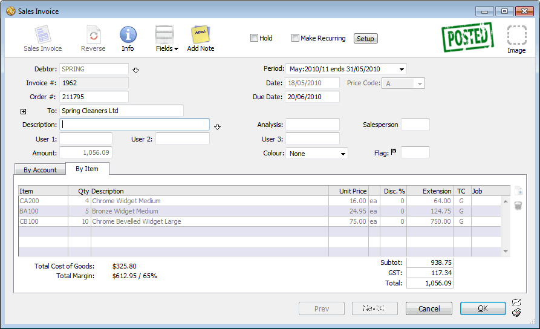
changes
The current data in the field will be highlighted ready to be overtyped. Click the mouse to get an insertion point within the highlighted area if you only want to add or delete a few letters.
If you are modifying a number of transactions at once, use the Next button to save the changes to the current transaction and display the next one to be modified.
Click OK when you have reached the last transaction to be changed or when you want to finish modifying transactions.
To save the current transaction and move back through the selected transactions, click the Previous button.
Note: If you have altered a posted transaction, you will be asked for confirmation. If you choose to save the changes, the transaction is tagged as having been altered since posting (this can be seen in the Get Info window.
Sometimes you may need to enter a transaction that is the same as, or similar to, an existing one. The Duplicate command makes this easy.
Choose Edit>Duplicate «Transaction» or press Ctrl-D/⌘-D or click the Duplicate toolbar button or right click on the transaction and choose Duplicate
If the Ask option is set in the Duplicating Transactions preferences, and the transaction being duplicated is not a journal, you will be asked whether you want the new transaction to have a new reference number or the same reference number.
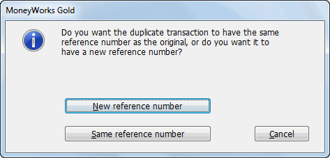
The reference number is kept in the OurRef field —see Transactions, and depends on the type of transaction:
Transaction Type Reference number
Payments The cheque number
Receipts The receipt number Debtor Invoices The invoice number Creditor Invoices The order number Quotes/Sales Orders The quote number Purchase Orders The order number
The duplicated transaction will be displayed. As it is unposted (even if the original was posted), you can modify any of its fields.
If the period of the original transaction is closed, the duplicate will be put into the current period. Otherwise the period will remain the same.
Note: For transactions in a non-local currency, the exchange rate for a duplicated transaction will be taken from the system rate of the period into which the new transaction falls. You can use the Exchange Rate button to change this once the new transaction has been created.
Note: When duplicating a Quote, you will be asked if you want the new Quote to have updated prices based on the existing prices in the Items list.
Only unposted transactions can be deleted. To correct a posted transaction you should use the Cancel command.
Choose Edit>Delete
You will be asked for confirmation.
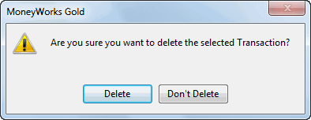
Posted transactions are deleted by means of the Purge command —see Purging a Period.
While a transaction is being modified it can be reversed.
The numbers in the transaction will change sign. If the transaction is a Journal, the Debit and Credit columns will be swapped.
Click OK to accept the reversed transaction
You can find out useful information about a transaction by using the Get Info command, or clicking the Info transaction toolbar button. Use this to find out if the transaction has been reconciled, what its security level is, when it was processed for GST/VAT, the date it was entered etc.
Choose Select>Get Info, or double-click the transaction and click the Info toolbar button
The Transaction Info window will be displayed
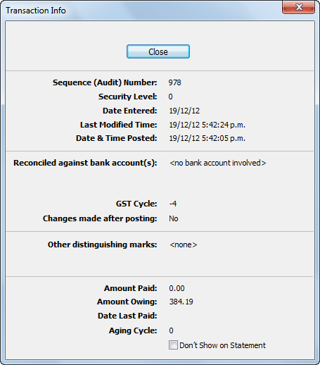
The Info button